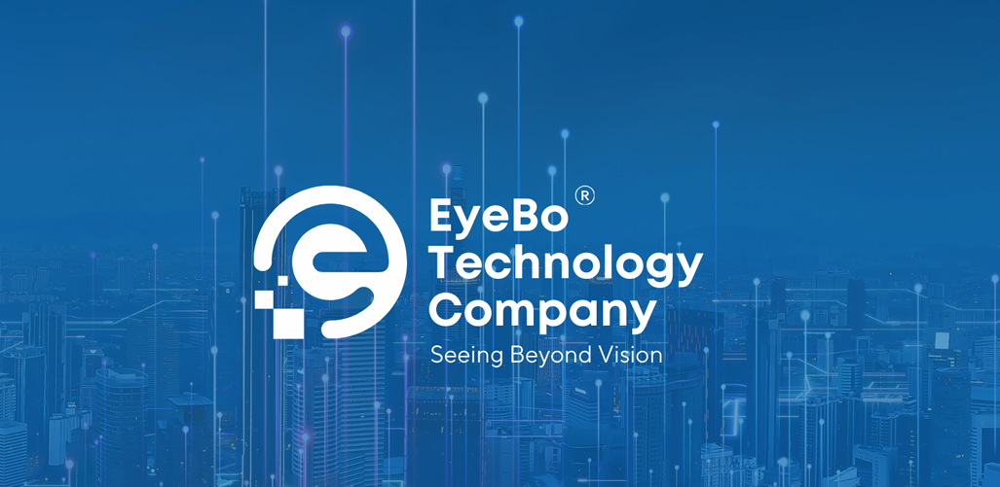
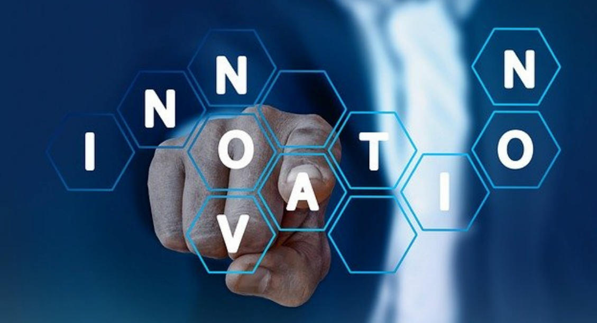

Welcome to EyeBo Technology Company. We specialize in innovative tech solutions that make a difference.
The FIRA RoboWorld Cup is an esteemed international robotics competition, established in 1996, that encompasses various robotic soccer competitions and other robotic challenges. This annual event, hosted by different countries each year, aims to advance robotics technology through competitive and cooperative team activities, fostering innovation in robotics, artificial intelligence, and related fields.
Participants at the FIRA RoboWorld Cup are at the forefront of technological innovation, often developing new algorithms, sensors, and hardware to enhance their robots' performance. The competition bridges the gap between theoretical research and practical application, making it a fertile ground for technological advancements.
In recent years, the event has seen significant participation: Tai Chung, Taiwan, hosted over 1,200 participants in 2018, and Changwon, South Korea, saw the event in 2019. The 2020 event adapted to a virtual format due to the COVID-19 pandemic, demonstrating the flexibility and resilience of the robotics community. Over the past year alone, FIRA organized 26 competitions, engaging more than 10,000 participants globally.
The FIRA RoboWorld Cup is not just about technological prowess; it's also a platform for innovation in business. This league attracts investors, industry leaders, and academics by showcasing cutting-edge developments in robotics, AI, and automation.
Teams focus on creating viable business models and sales strategies, offering both professional and youth participants valuable insights into market dynamics and startup processes.
EyeBo is proud to introduce the C11 AI team, a dedicated group within our company addressing common health issues arising from prolonged computer and mobile phone use, such as body hunching and neck bending.
The H-Sit smart application leverages artificial intelligence and advanced image processing technology to monitor and improve users' posture in real-time.
The system alerts users to correct their posture when a non-standard position is detected, helping prevent long-term health problems associated with poor posture.
Additionally, H-Sit records user performance, generating detailed reports that provide insights into posture habits.
These reports enable the program to suggest personalized corrective actions and include training exercises to help users improve their posture over time. Users can track their progress and see tangible improvements through continuous feedback.
In today's digital age, the C11 team's solution is essential for enhancing comfort, productivity, and long-term health and well-being.